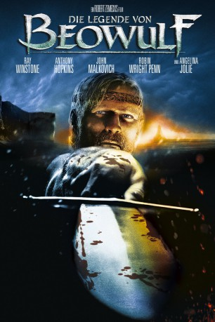
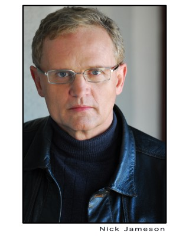
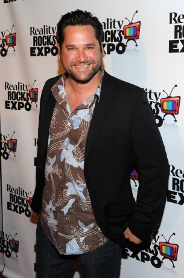
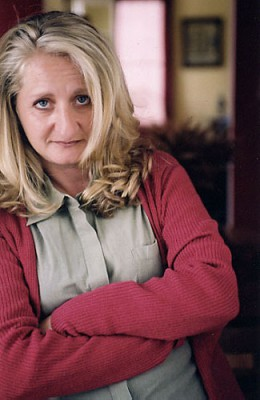

#5509 Die Legende von Beowulf
Alternativ: Beowulf
 
 IMDB-Wertung: 6.2 / 10
IMDB-Wertung: 6.2 / 10  Metascore: 0
Metascore: 0 
Der junge Held Beowulf steht Hrodgar, dem König der Dänen, im Kampf gegen das trollähnliche Ungeheuer Grendel bei. Das angelsächsische Gedicht, das der Geschichte zu Grunde liegt, gehört zu den ältesten Schätzen der altenglischen Literatur. Nähere Infos zu dem Thema findet man bei wikipedia.org. In grauer Vorzeit der Heldensagen stellt sich der mächtige Krieger Beowulf dem Duell mit dem monströsen Dämon Grendel. Der Sieg über ihn erregt den höllischen Zorn von Grendels ruchlos-verführerischer Mutter, der für ihre Rache jedes Mittel recht ist...
Jahr: 2007
Dauer: 114 Minuten
FSK: 12
Land: USA Studio: Paramount PicturesTonspuren: DD5.1 - ,
Untertitel: Deutsch, Englisch,
Auflösung: 1080p (1920x816) Größe: 5376 MB
Genre: Action, Abenteuer, Fantasy, Animation/Trick
Regisseur:  Robert Zemeckis
Robert Zemeckis
Drehbuch: Randall Wallace
Soundtrack:
Darsteller:
 Robin Wright als Wealthow
Robin Wright als Wealthow Anthony Hopkins als Hrothgar
Anthony Hopkins als Hrothgar- Sharisse Baker-Bernard als Hild
- Charlotte Salt als Estrith
 Julene Renee als Cille
Julene Renee als Cille Jonny Rees als Garmund
Jonny Rees als Garmund- Rik Young als Eofor
 Sebastian Roché als Wulfgar
Sebastian Roché als Wulfgar- Leslie Zemeckis als Yrsa
 John Malkovich als Unferth
John Malkovich als Unferth Woody Schultz als Aesher
Woody Schultz als Aesher- Tyler Steelman als Young Cain
-  Nick Jameson als Drunken Thane
 Crispin Glover als Grendel
Crispin Glover als Grendel Ray Winstone als Beowulf / Golden Man / Dragon
Ray Winstone als Beowulf / Golden Man / Dragon Brendan Gleeson als Wiglaf
Brendan Gleeson als Wiglaf Shay Duffin als Scylding's Watch
Shay Duffin als Scylding's Watch- Costas Mandylor als Hondshew
 Chris Coppola als Olaf
Chris Coppola als Olaf Angelina Jolie als Grendel's Mother
Angelina Jolie als Grendel's Mother- Dominic Keating als Cain
 Jacquie Barnbrook als Aethelbeorg
Jacquie Barnbrook als Aethelbeorg- Fredrik Hiller als Frisian Leader
 Alison Lohman als Ursula
Alison Lohman als Ursula- Richard Burns als Additional Adult Performer
- Chris Mala als Additional Adult Performer
- Tim Trobec als Additional Adult Performer
- Camille Lannan als Additional Adult Performer
- Larkin Campbell als Additional Adult Performer
-  John Littlefield als Additional Adult Performer
- Shawn Driscoll als Additional Adult Performer
- Amy Esacove als Additional Adult Performer
- Emily Johnson als Additional Adult Performer
 Fred Tatasciore als Voice Performer
Fred Tatasciore als Voice Performer Holly Dorff als Voice Performer
Holly Dorff als Voice Performer Neil Dickson als Voice Performer
Neil Dickson als Voice Performer Peter Lavin als Voice Performer
Peter Lavin als Voice Performer Peter Dennis als Voice Performer
Peter Dennis als Voice Performer- Paul Baker als Musician #1
- John Bilezikjian als Musician #2
- Rod D. Harbour als Musician #3
- Brice Martin als Musician #4
-  Sonje Fortag als Gitte
- Daniel D. McGrew als Beowulf's Scop
- Alan Jones Silva als Beowulf's Jester
- Kevin Dorman als Additional Adult Performer
- Jared Weber als Additional Adult Performer
- Tom West Jr. als Additional Adult Performer
- Michael Lofgren als Additional Adult Performer
- Rob McCabe als Additional Adult Performer
Datei: X:\HD-Trick\Legende von Beowulf, Die (2007, FSK12, 1920x816).mkv seit 13.02.2017
Festplatte: Kinder-Filme+Trick
 Es gibt insgesamt 28 Filme in der Gruppe 'HD-Trick'
Es gibt insgesamt 28 Filme in der Gruppe 'HD-Trick'